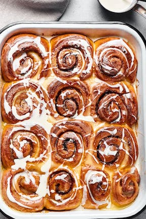

These recipes are my all time favorite! Some are harder than others. I hope you enjoy making them.
Notes: This is a great recipe, but because of the mozzarella in the dough, there is a slight taste of mozzarella. I would still definitely make it again.
Ingredients
For the Dough:
For the Filling:
For the Icing: (I didn't use the icing)
Steps
Preheat the oven to 180C/350F. Line a 9 x 13-inch baking dish with parchment paper and set aside. In a small bowl, whisk together the almond flour, baking powder, and sugar. In a microwave-safe bowl, combine the mozzarella cheese and cream cheese and microwave in 20-second spurts until warm. Whisk together until combined and smooth. Transfer the melted cheese into a food processor, add the eggs and dry ingredients, and blend until the dough is smooth. Roll out the dough into a large rectangle. Brush the top with melted butter, then sprinkle with the brown sugar substitute and cinnamon. Roll the dough into a log. Using a sharp knife, slice off the uneven ends of the roll. Slice the log into 12 rolls. Place the rolls into the baking dish. Bake the cinnamon rolls for 20-25 minutes, or until golden and the dough is cooked. Remove the cinnamon rolls from the oven and frost them. To make the frosting, whisk together the cream cheese, butter, and powdered sugar. Add the milk, as needed, until thick and creamy.